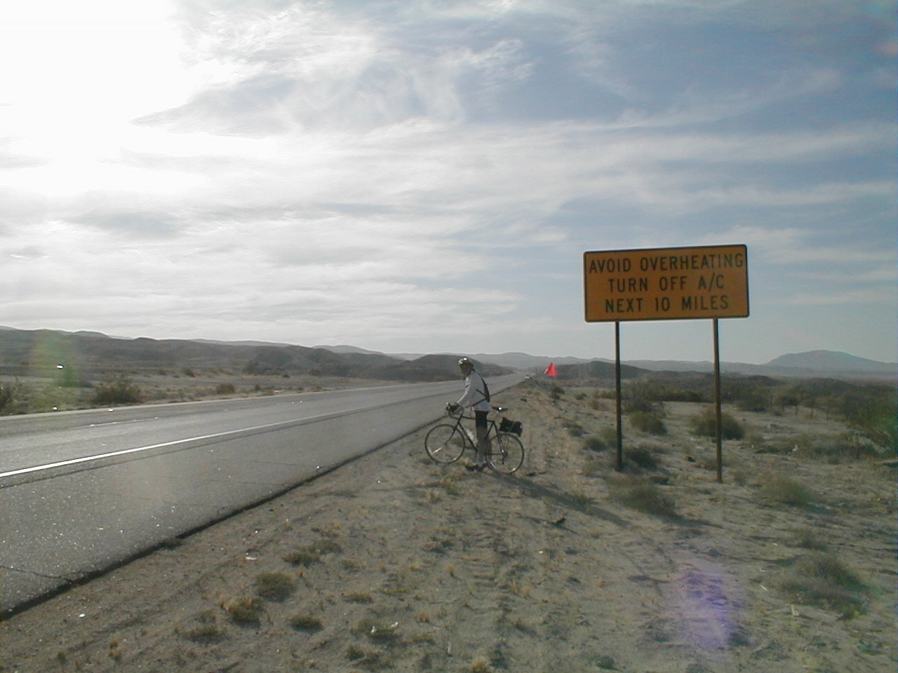

Day 3: May 15, Indio, CA to Blythe, CAPrevious Day - Home - Next Day Photo of the DayYou know you're in the desert when... Keegan's LogDay 3: May 15, Indio, CA to Blythe, CA Mileage: 101.53 milesWeather: 85-110 degrees, Sunny with a headwind Vertical Climb: 2560 feet Riding Time: 7 hours As Tracy put it, today was a work day. It was hot right from the start today, about 85 degrees when we left the hotel. We headed for the interstate, as most of today's ride took place along the breakdown lane of I-10. We were greeted by a nice 11 mile climb which took us from below sea level to about 1600 feet. The interstate riding is always exciting, the truck tire pieces leave little steel wires on the road which love to eat into bicycle tires. I was the first one to have a flat tire, at around the 25 mile mark. We changed it pretty quickly and got back on the road, but dad got a flat shortly thereafter. We made it to the rest stop and changed the tire twice, in fact we had to buy some spare tubes. We were running a little behind schedule so we tried to make up some time on the way to Desert Center. We made it to Desert Center, a tiny little town in the absolute middle of nowhere, just in time for some lunch. They took their time making our sandwiches, so we were again running behind schedule by the time we left. Dad got another flat tire just down the road from Desert Center, luckily Pat, the mechanic, arrived in the sag van to help change it. We were moving pretty slowly though, just trying to keep cool as the temperatures reached well over 100 degrees. We eventually joined a small group and helped each other along by breaking the wind up a bit, though the pace was slow. After a few hours of plodding along we did eventually make it to Blythe. Right now we're only about 5 miles from the border of Arizona, tomorrow morning we cross our first state line. Tomorrow is a long day, 116 miles through more of the desert. Everyone is feeling a little sore from today's ride, but I know I'll feel a little better when tomorrow's ride is over. Phil's LogThe day started at 85F, and an 11 mile climb. I was really frightened for a moment as Keegan passed a highway sign and I heard a loud bang - I thought he had hit his helmeted head on the sign, but instead his front tire kicked a piece of road debris into the rear, and the bang was his back tire blowing out. That repaired, I had a flat of my own due to a thorn, then another in the afternoon from a piece of wire from a tire carcass. (It is interesting that in ballooning and bicycling, the major hazard seems to be the same, wires!) Tracy and crew do a great job keeping us hydrated and our spirits up. Much of today's ride was 110F and the heat takes its toll. It is very hard. Tomorrow is 116 miles with three uphill segments. After that, thank God, the days get easier for a while. The desert is beautiful but bicycling allows little time for looking. The easiest riding is in a pace line, llowing us to cheat the headwinds a little. But it requires concentration on the rear of the bicycle ahead. Tailwinds would be nice, and unfamiliar. Keegan has now a website of the ride with some photos. If you like, visit http://expert.cc.purdue.edu/~brownkl The achilles did okay today, thanks to all for your prayers and thoughts. |
{kind=link}